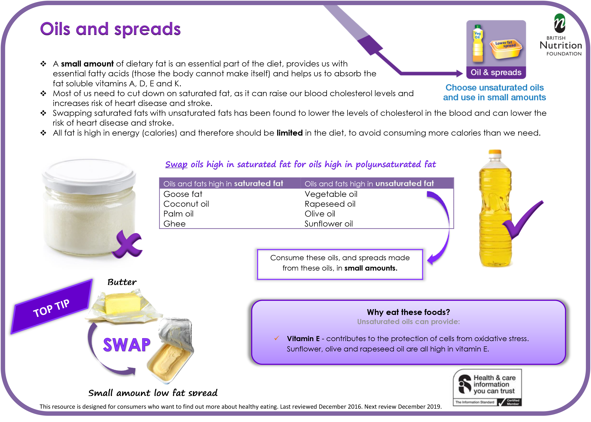

NUTRITION
When performing at peak physical levels the body needs fuel to convert into energy to burn. This fuel is provided by food (Nutrition) and water (Hydration).
Nutrition and hydration play an important role in performance, endurance, strength and recovery.
How strong we feel, how we perform, and for how long, and how we feel and recover afterwards are all affected by fluid intake and what we have eaten, and when.
Nutrients
All food contains nutrients that provide energy for the body and/or are used by the body for growth and development.
MICRONUTRIENTS
Micronutrients are the minerals and vitamins – nutrients needed in small quantities to aid and improve body functionality.
MACRONUTRIENTS
Macronutrients (macro meaning large) are nutrients needed in greater quantities by the body to use as energy and to help maintain the body and promote growth.
Macronutrients cannot be produced by the human body, we acquire these macronutrients from our diet alone.
These macronutrients are called:
- Carbohydrate
- Protein
- Fat
When converting macronutrients into energy. The body burns carbohydrate easiest and fastest, protein burns slower, but, lasts longer.
Fat is the hardest to burn, and takes longest for the body to break down and absorb.

CARBOHYDRATES
Carbohydrates primarily provide energy for the body. There are 3 types of carbohydrate in food:
- sugar
- starch
- fibre
- Sugar
-
The majority of sugar eaten in the UK is classed as free sugar. These are sugars added to food or drinks, yoghurts, cereals and fizzy drinks.
Sugars in honey, syrup and unsweetend fruit juice although naturally occurring, are also free sugars.

Carbohydrates are also broken down into simple carbohydrates (fibre & starch), complex carbohydrates (sugar) or refined carbohydrates. The difference between them is just in how quickly they are broken down, digested and absorbed by the body.
SIMPLE CARBOHYDRATES
Simple carbohydrates are basically sugars which are naturally occurring in fruit, vegetables and milk, or added to processed foods food and drink. Sugar in any form should be carefully managed, avoiding soda/fizzy sugary drinks and food will be much appreciated by your body.
REFINED CARBOHYDRATES
Refined carbohydrates refer to carbohydrates that have been processed. When the bran and kernel of grain products are stripped away, leaving behind just the starch behind, much of the fibre is removed then the carbohydrate is broken down and absorbed quicker than normal, and can sometimes raise blood glucose levels as quickly as simple sugars.
COMPLEX CARBOHYDRATES
Complex carbohydrates are starches formed by longer carbohydrate molecules, which means they take longer to break down into energy. They include refined starches in white bread, cakes and most pastries. When dieticians refer to complex carbohydrates, they are usually referring to wholegrain foods and starchy vegetables which are absorbed slower than refined carbohydrates.
PROTEIN
As well as energy, protein provides amino acids necessary for growth and maintenance of the body. Protein is found in meat, fish, eggs, dairy products, cereals, bread, soya and pulses.

FAT
Fat provides essential acids that the body cannot make itself, as well as providing energy it helps maintain cell structure and carries fat-soluble vitamins. Fat is found in fats and oils, meat and meat products, dairy foods, oily fish, nuts and seeds.
